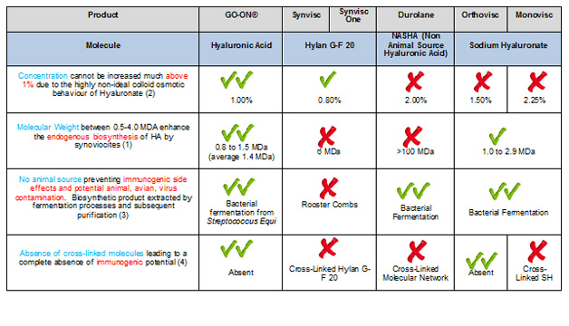
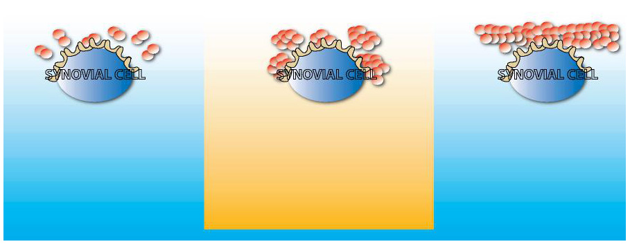

Healthcare Professionals

Hyaluronic Acid: is a natural polymer, present in the extracellular matrix of most tissues and particularly abundant within the synovial joints, where it exerts a pivotal role in maintaining the physiological balance of the joint functional unit (synovial fluid, synovium, cartilage). The metabolism of Hyaluronic Acid is very dynamic, with continuous synthesis by chondrocytes and synoviocytes and degradation by hyaluronidase, an enzyme which is ubiquitous in biological fluids.
Since hyaluronidase has increased activity in presence of an inflammatory process, Hyaluronic Acid may be particularly prone to degradation within the joints of patients with Osteoarthritis. Qualitative and quantitative alterations of Hyaluronic Acid in the joint microenvironment are associated with the painful and function-limiting symptomatology of Osteoarthritis.
Degenerative joint diseases such as osteoarthritis are associated with a substantial loss of viscosity of the synovial fluid, which impairs its lubricating and shock absorbing functions. This increases the mechanical stress on the joint as well as the loss of articular cartilage to such an extent as to cause pain and loss of function in the affected joints. Visco-supplementation is a medical procedure by which high-viscosity Hyaluronic Acid is injected within the intra-articular space in patients with knee Osteoarthritis, with the aim to restore the natural lubricant and cushioning properties of endogenous Hyaluronic Acid.
Hyaluronic acid (HA) injection is used to treat joints pain (knee, hip and/or shoulder) caused by osteoarthritis (OA) in patients who have already been treated with pain relievers or other treatments that did not work well. Hyaluronic acid is similar to a substance that occurs naturally in the joints (synovial fluid). Hyaluronic Acid works by acting like a lubricant and shock absorber in the joints and helps the joints to work properly.
It has been established that an improvement in the quality of the synovial fluid resulting from an intra-articular injection of Sodium Hyaluronate preparations improves the visco-elastic properties of the synovial fluid. This enhances its lubricant as well as its shock absorbing actions and reduces the mechanical stress on the joint. This results in alleviation of the pain and an improvement in joint mobility, which after a single treatment cycle of 3 to 5 intra-articular injections, last for a minimum of 6 months.
Hyaluronic acid injections are treatment options doctors may offer when a patient is no longer able to control osteoarthritis pain with nonsteroidal anti-inflammatory drugs (NSAIDs), or the patient cannot tolerate these drugs (which can cause side effects such as stomach bleeding and kidney problems). The treatment regimen for hyaluronic acid usually involves receiving one injection in the affected joint per week for three to five weeks.
The idea of using hyaluronic acid to treat osteoarthritis was originally proposed several years ago by Hungarian scientist Endre A. Balasz in 1974 and started to be used as treatment by 1987.
Since its introduction in the ‘80s, visco-supplementation has progressed from a treatment mostly indicated for patients showing inadequate response (or contraindications) to other pharmacological therapies to a more specific role, sometimes regarded as a first-line treatment, due to its quick-onset pain-relieving and mobility-improving effects. While such short-term effects are particularly related to the “supplementation” of the elasto-viscous properties of the synovial fluid, the well-documented medium-term benefit may be linked with an overall restoration of the normal metabolic homeostasis of the joint microenvironment.
GO-ON® is an injectable Hyaluronic Acid, this product is injected directly in the joint (approved by Health Canada to be used on knee, hip and/or shoulder) to supplement the synovial fluid in the joint to help lubricate and cushion it, GO-ON® is administered 3 to 5 times at weekly frequency and can provide up to six months of osteoarthritis knee pain relief.
Some hyaluronic acid treatments for joint osteoarthritis are made from rooster or chicken combs and others are derived from bacterial fermentation. Both sources yield highly purified Hyaluronic Acid preparations, devoid of any immunogenic side-effects. Potential concerns about viral outbreaks, particularly insidious in the avian species, may however suggest some precaution in adopting Hyaluronic Acid preparations from animal sources. GO-ON® is a biosynthetic product, the Hyaluronic Acid contained in GO-ON® is extracted from bacteria (Streptococcus Equi) by fermentation processes and subsequent purifications. The non-animal source and the highly standardized purification process guarantee not only the absence of immunogenic reactions but also safety from avian virus contamination.
Hyaluronic Acid with high molecular weight (MW) contributes to higher viscosity within a given volume. This may prolong the time of injected Hyaluronic Acid in the joint, and cause pain upon injection. There seems to be no direct relationship between Molecular Weight and clinical efficacy. Hyaluronic Acid preparations for visco-supplementation should therefore aim at medium-level viscosity (about 1 million Daltons), where a balance between the advantages and potential adverse events can be maintained. The average Molecular Weight of GO-ON® is 1.4 million Daltons. Hyaluronic acid cross–linked preparations are developed with high molecular weight, and high viscosity properties.. The main reason why Hyaluronic Acid can safely be injected in humans is related to the complete absence of immunogenic potential. All “bridge-molecule” introduces a foreign body element which should be carefully evaluated, for potential safety concerns. GO-ON® contains no cross linked molecules.
GO-ON has been approved worldwide since 2000 and is currently marketed throughout the European Union and in a number of other Countries in Asia and South/Central America.
Hyaluronic Acid Ideal Profile: There are many Hyaluronic Acid-based visco-supplementation products available worldwide: the main differences are based on four main parameters
• Molecular weight: Higher molecular weight contributes to higher viscosity within a given volume. This may prolong the time of injected Hyaluronic Acid in the joint, and cause pain upon injection. There seems to be no direct relationship between Molecular Weight and clinical efficacy. Hyaluronic Acid preparations for visco-supplementation should therefore aim at medium-level viscosity (about 1 million Daltons), where a balance between the advantages and potential adverse events can be maintained.
• Source of HA: Hyaluronic Acid can be extracted from animal tissues (mostly avian sources such as rooster combs) or obtained by biological fermentation of several bacterial strains, whose capsule is rich in Hyaluronic Acid. Both sources yield highly purified Hyaluronic Acid preparations, devoid of any immunogenic side-effects. Potential concerns about viral outbreaks, particularly insidious in the avian species, may however suggest some precaution in adopting Hyaluronic Acid preparations from animal sources.
• Absence or presence of cross- linked (intra-chain linked with bridge-molecules, aimed at increasing the Molecular Weight): The main reason why Hyaluronic Acid can safely be injected in humans is related to the complete absence of immunogenic potential. Hyaluronic Acid is a highly conserved molecule in phylogenesis (study of evolutionary relationships among groups of organisms), from bacteria to mammalians. All “bridge-molecule” introduces a foreign body element which should be carefully evaluated, for potential safety concerns.
• Concentration: At a fixed concentration of 10 mg/ml (1%). Due to the unique colloid-osmotic properties of Hyaluronic Acid, this is the ideal concentration. If Hyaluronic Acid is injected at significantly higher concentrations, it will be diluted within hours to concentrations around 10 mg/ml, balancing the colloid-osmotic pressure with the interstitial fluids (10 mm Hg). As a consequence, the initial intrinsic viscosity of a Hyaluronic Acid preparation at concentrations higher than 10 mg/ml will be significantly reduced, with unwanted loss of its viscoelastic properties.

References
1.- Smith M, Ghosh P. The synthesis of HA by human synovial fibroblast is influenced by the nature of the hyaluronate in the extracellular environment. Rheumatology Intl. (1987) 7: 113-122
2.- Bothner H, Wik, O. Rheology of Hyaluronate, Acta Otolaryngol Suppl. 1987: 442:25-30
3.- Altman R. et al. Efficacy and safety of a single intra-articular injection of non-animal stabilized hyaluronic acid (NASHA) in patients with osteoarthritis of the knee. Osteoarthritis and Cartilage. Vol. 22 Iss. 8, Pages 642-649, August 2004
4.- Conduac A et al, Managing joint pain is osteoarthritis: safety and efficacy of hylan G-F 20. Journal of Pain Research, 2009:2 87-98
What is GO-ON: GO-ON® is a Class III medical device, developed and manufactured by Rottapharm Madaus, and distributed by Xediton Pharmaceutical Inc. in Canada, consisting of a sterile non-pyrogenic Hyaluronic Acid preparation for Intra-Articular administration (2.5 ml of 1% sodium hyaluronate solution, contained in a disposable sterile 5-ml syringe). GO-ON® is indicated for viscoelastic supplementation for synovial fluid in the knee, shoulder and hip synovial joints of Osteoarthritic patients.
Due to its physicochemical characteristics, GO-ON® acts by lubricating the joint and absorbing the mechanical stress underwent by the articular joint. As a consequence, pain and impaired joint function due to degeneration of the joint are reduced. This product is therefore well suited for the treatment of Osteoarthritis symptoms.
The product has been approved since 2.000 and is currently marketed throughout the European Union and in a number of other Countries in Asia and South/Central America.
GO-ON® has ideal viscoelastic properties due to the particular profile as a consequence of the following parameters:
Source of HA: GO-ON® is a biosynthetic product, the Hyaluronic Acid contained in GO-ON® is extracted from Streptococcus Equi by fermentation processes and subsequent purifications. The non-animal source and the highly standardized purification process guarantee not only the absence of immunogenic reactions but also safety from animal, namely avian virus contamination. Differently from some marketed Sodium Hyaluronate preparations which contain Sodium Hyaluronate of extractive origin (from rooster combs), GO-ON® contains Sodium Hyaluronate obtained from Streptococcus Equi by fermentation processes and subsequent purification. The biosynthetic (fermentative) origin is more advantageous than the extractive origin because of tolerability reasons, i.e. elimination of any risk of antibody reactions and consequent inflammatory processes and virus safety.
Molecular weight: While Hyaluronic Acid preparations extracted from animal tissue may be affected in terms of consistency of “molecular weight” by the different types and origin of the animal organs (e.g. rooster combs) utilized, Hyaluronic Acid of biosynthetic origin can be produced with an established and consistent grade of polymerisation and an "average molecular weight" in order to reach the desired intrinsic viscosity of a standard solution. This represents a further advantage with respect to Sodium Hyaluronate of extractive origin, the molecular weight of which may be influenced by the different type or origin of rooster combs. The average Molecular Weight of GO-ON® is 1.4 million Daltons, with a Molecular Weight distribution in the solution mostly ranging from 800.000 to1.5 Million Daltons. This Molecular Weight is comparable to other Hyaluronic Acid-based products utilized in visco-supplementation therapies; as shown in the figure below, this particular range of Molecular Weight is considered “optimal” to favour endogenous biosynthesis of Hyaluronic Acid by synoviocytes.

Figure: the Hyaluronic Acid with Molecular Weight ranging 0.5 Million Daltons – 4 Million Daltons has been reported to favour endogenous biosynthesis of Hyaluronic Acid by synoviocytes (Smith and Gosh, 1987)
Concentration: GO-ON® is characterized by its intrinsic viscosity (mostly related to its Molecular Weight), at a fixed concentration of 10 mg/ml of Hyaluronic Acid. Due to the unique colloid-osmotic properties of Hyaluronic Acid, this is the ideal concentration. If Hyaluronic Acid is injected at significantly higher concentrations, it will be diluted within hours to concentrations around 10 mg/ml, balancing the colloid-osmotic pressure with the interstitial fluids (10 mm Hg). As a consequence, the initial intrinsic viscosity of a Hyaluronic Acid preparation at concentrations higher than 10 mg/ml will be significantly reduced, with unwanted loss of its viscoelastic properties.
Several Hyaluronic Acid preparations are currently available for clinical use, mostly in pre-filled syringes and differing on the basis of their molecular weight, ranging from 500.000-730.000 Daltons (medium-low Molecular Weight) to 800.000 -2.000.000 Daltons (intermediate Molecular Weight) up to the high Molecular Weight preparations (average 6.000.000 Daltons).
Clinical meta-analyses show that the medium/intermediate Molecular Weight are associated with the more favourable efficacy and tolerability profile.
Clinical trials have showed that Hyaluronic Acid preparations with Molecular Weight ranging from 570,000 Daltons to 6 Million Daltons were effective and well tolerated, GO-ON® is manufactured from safe sources and its ideal Molecular Weight range demonstrate that it is the best product for visco-supplementation of knee Osteoarthritis.
Extensive clinical testing has confirmed efficacy and safety of GO-ON® in relieving pain symptomatology and improving function in patients with Osteoarthritis of the knee, both with the 5-course and with the 3-course weekly injection schedule.
Safety profile: experience from market exposure: The patient exposure is derived from the market data i.e., the number of syringes sold in all countries during one reference period. GO-ON® sales in all countries from January 2007 to December 2011 were 4,193,467 syringes. Considering that patients are treated with 1 injection once a week, and that the common clinical practice is to perform 3 to 5 injections of GO-ON® per therapeutic cycle, the patients exposure has been expressed as patient/weeks and as patient/cycles. The total patient/weeks were speculated to be 4,193,467 patient/weeks (same than the number of syringes). The number of treated patient/cycles was estimated to be
1,397,822 patient/cycles for a therapy of 3 injections per cycle
838,693 patient/cycles for a therapy of 5 injections per cycle
During the 5-year period from January 2007 to December 2011, a total of 40 safety complaints were reported following GO-ON® treatment over the number of patients treated with 3 or 5 cycles (0.003% or 0.005% respectively), and only 14 were classified as incidents (0.0010% or 0.0016% respectively). The percentage of total safety complaints occurred with GO-ON® in the 5-year period can be considered negligible and most of safety complaints are foreseeable in the GO-ON Instructions for Use. The reactions may occur rarely; however, this is mitigated by the requirement that GO-ON® must be administered by a qualified medical practitioner, resulting in a risk consequence classification of marginal. GO-ON® should only be used by qualified persons who are familiar with its use. In order to safely administer GO-ON®, the doctor must strictly follow the instructions for use and the warnings and precautions indicated in the Product Information.